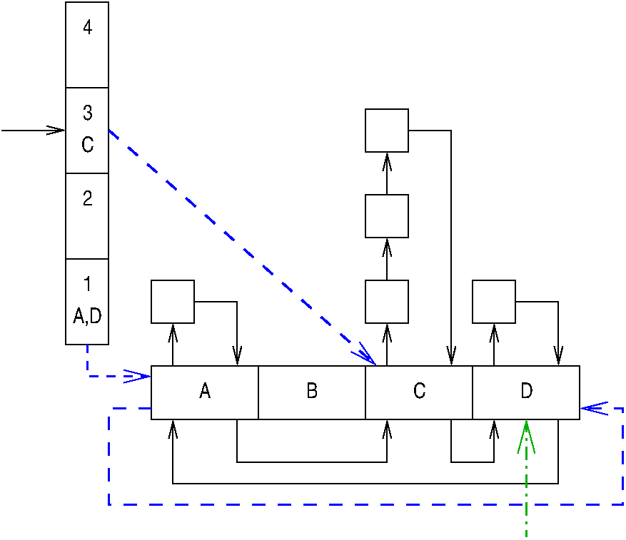
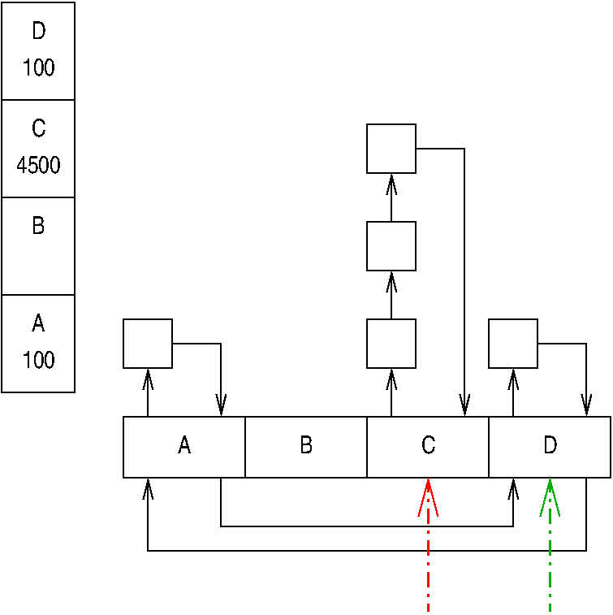
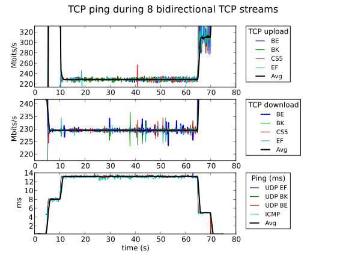
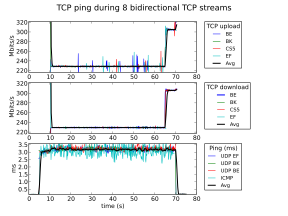

December 2, 2012
Author list TBD
Bufferbloat severely degrades Internet response times, particularly for low-bandwidth traffic such as voice-over-IP (VOIP). Although unintelligible VOIP connections are perhaps the most familiar symptom of bufferbloat, it also impedes other important types of traffic, including DNS lookups, DHCP packets, ARP packets, and routing packets. Because timely delivery of these packets is critical to Internet operation for all types of traffic, bufferbloat affects everyone. Internet is literally drowning in its own buffers.
Fortunately, Kathleen Nichols and Van Jacobson have provided an important
weapon in the fight against bufferbloat, namely
the CoDel queueing algorithm,
as noted on page 9 of the Internet Society's
Bandwidth Management Technology Roundtable Series.
And just as fortunately,
Eric Dumazet's and Dave Täht's Codel implementation appeared in v3.5 as
net/sched/sch_codel.c.
However, in his
IETF presentation,
Van Jacobson recommends use of FQ-CoDel, which combines
stochastic fairness queueing (SFQ)
with CoDel.
Eric and Dave were ahead of this game as well, and their FQ-CoDel
implementation also appeared in v3.5 as
net/sched/sch_fq_codel.c.
Of course, Alexey Kuznetsov implemented SFQ itself as
net/sched/sch_sfq.c back in the 1990s.
So how does FQ-CoDel differ from SFQ on the one hand and from pure CoDel on the other? The remainder of this article addresses this question as follows:
This is of course followed by the Answers to Quick Quizzes.
The purpose of SFQ is straightforward: With high probability, isolate “hog” sessions so that they bear the brunt of any packet dropping that might be required. To this end, an example SFQ data structure might look as follows:

The horizontal row of boxes labeled A, B, C, and D represent a hash table of queues. Each incoming packet is enqueued based on a hash of its “quintuple”, namely its source address, source port, destination address, destination port, and IP protocol (e.g., 6 for TCP or 17 for UDP). The default number of hash buckets in the Linux kernel implementation is 128, but the figure above shows only four buckets for clarity. As shown in the diagram, each hash bucket is a queue that can hold a number of packets (denoted by empty boxes) in doubly linked lists. In the Linux kernel implementation, a given queue can hold at most 127 packets.
Each non-empty bucket is linked into a doubly linked list, which in this example contains buckets A, C, and D. This list is traversed when dequeueing packets. In this example, the next bucket to dequeue from is D, indicated by the dot-dashed arrow, and the next bucket after that is A.
Each non-empty bucket is also linked into a doubly linked list containing all other buckets with the same number of packets. These lists are indicated by the dashed arrows. These lists are anchored off of an array, shown on the left-hand side of the diagram. In this example, the buckets with one packet are A and D. The other list contains only C, which is the sole bucket having three packets.
There is also an index into this array that tracks the buckets with the most packets. In the diagram, this index is represented by the arrow referencing array element 3. This index is used to find queues to steal packets from when the SFQ overflows. This approach means that (with high probability) packets will be dropped from “hog” sessions. These dropped packets can then be expected to cause the “hog” sessions to respond by decreasing their offered load, for example, due to TCP's end-to-end congestion control. This is the major purpose of the SFQ: To preferentially cause “hog” sessions to decrease their offered load, while allowing low-bandwidth sessions to continue undisturbed. This will in theory result in fair allocation of packet transmissions at network bottlenecks, at least for some probabilistic definition of “fair”.
There clearly will be some list maintenance required as packets are enqueued and dequeued, and readers interested in that sort of detail are referred to the paper.
Of course, it is possible that a low-bandwidth session will, though sheer bad luck, happen to hash to the same bucket as a “hog” session. In order to prevent this from becoming permanent bad luck, SFQ allows the hash function to be periodically perturbed, in essence periodically reshuffling the sessions. This can be quite effective, but unfortunately interacts poorly with many end-to-end congestion-control schemes because the rehashing often results in packet drops or packet reordering, either of which can cause the corresponding session to unnecessarily decrease offered load. Nevertheless, SFQ works well enough that it is often configured as a “leaf” packet scheduler in the Linux kernel.
Quick Quiz 1:
But mightn't tricky protocol designers split their “hog” sessions over
multiple TCP sessions?
Wouldn't that defeat SFQ's attempt to fairly allocate bottleneck link
packet transmissions?
Answer
The underlying CoDel article is described in the LWN article, the ACM Queue paper, the CACM article, and Van Jacobson's IETF presentation. The basic idea is to control queue length, maintaining sufficient queueing to keep the outgoing link busy, but to avoid building up the queue beyond that point. Roughly speaking, this is done by preferentially dropping packets that sit in the queue for longer time periods.
Quick Quiz 2:
What does the FQ-CoDel acronym expand to?
Answer
Nevertheless, CoDel still maintains a single queue, so that low-bandwidth packets (such as those from VOIP sessions) could easily get stuck behind higher-bandwidth flows such as video downloads. It would be better to allow the low-bandwidth time-sensitive VOIP packets to jump ahead of the video download, but not to the extent that the video download is in any danger of starvation—or even in danger of significant throughput degradation. One way to do this is to combine CoDel with SFQ. This combining requires significant rework of SFQ, but of course Eric Dumazet was up to the job. A rough schematic of the result is shown below:

The most significant attribute of SFQ remains, namely that packets are hashed into multiple buckets. However, each bucket contains not a first-come-first-served queue as is the case with SFQ, but rather a CoDel-managed queue.
Perhaps the next most significant change in that there are now two lists linking the buckets together instead of just one. The first list contains buckets A and D, namely the buckets that with high probability contain packets from low-bandwidth time-sensitive sessions. The next bucket to be dequeued from is indicated by the dash-dotted green arrow referencing bucket D. The second list contains all other non-empty buckets, in this case only bucket C, which with high probability contains “hog” flows.
Quick Quiz 3:
But mightn't bucket C instead just contain a bunch of packets from
a number of unlucky VOIP sessions?
Wouldn't that be needlessly inflicting dropouts on the hapless VOIP users?
Answer
Quick Quiz 4:
OK, but if this session segregation is so valuable, why didn't the original
SFQ implement it?
Answer
Quick Quiz 5:
Suppose that a number of “hog” sessions are passing through
a given instance of FQ-CoDel.
Given the stochastic nature of FQ-CoDel, what guarantees fair treatment
of the “hogs” with respect to each other?
Answer
FQ-CoDel operates by dequeueing from each low-bandwidth bucket, unless there are no low-bandwidth buckets, in which case it dequeues from the first “hog” bucket. If a given bucket accumulates too many packets, it is relegated to the end of the “hog” list. If a bucket from either list becomes empty, it is removed from whichever list it is on. However, any low-bandwidth bucket that becomes empty is added to the end of the “hog” list. This is extremely important: if there was an unending drizzle of random packets, eventually all the buckets would end up on the “hog” list, which would force the “hog” list to be scanned, thus avoiding hog starvation.
The first packet arriving at an empty bucket is initially classified as a low-bandwidth session and is thus placed on the low-bandwidth list of buckets.
Quick Quiz 6:
Doesn't this initial misclassification unfairly penalize competing
low-bandwidth time-sensitive flows?
Answer
Another key change is that FQ-CoDel drops packets from the head of the queue, rather than the traditional drop from the tail, a tradition that SFQ adhered to. To see the benefit of dropping from the head rather than the tail, keep in mind that for many transport protocols (including TCP), a dropped packet signals the sender to reduce its offered load. Clearly, the faster this signal reaches the sender the better.
But if we drop from the tail of a long queue, this signal must propagate through the queue as well as traversing the network to the receiver and then (via some sort of acknowledgement) back to the sender. In contrast, if we drop from the head of a long queue, the signal need not propagate through the queue itself, but needs only traverse the network. This faster propagation enables the transport protocols to more quickly adjust their offered load, resulting in faster reduction in queue length, which in turn results in faster reduction in network round-trip time, which finally improves overall network responsiveness.
In addition, use of head drop instead of tail drop results in dropping of older packets, which is helpful in cases where faster propagation of newer information is more important than slower propagation of older information.
Another difference between SFQ and FQ-CoDel is that the array on
the left-hand side of the diagram is just an
array of ints in FQ-CoDel, as opposed to SFQ's array of
list headers.
This change was necessary because FQ-CoDel does its accounting in
bytes rather than packets, which allows the benefits of
byte queue limits (BQL) to be brought to bear.
But because there is an extremely large number of possible packet sizes,
blindly using the SFQ approach would have resulted in a truly huge array.
For example, assume an MTU of 512 bytes with a limit of 127 packets
per bucket.
If the SFQ approach were used, with a separate array entry per possible
bucket size in bytes, the array would need more than 65,000 entries,
which is clearly overkill.
In addition, because transmission of a 1,500-byte packet would require
that the queue be moved 1,500 entries down the array, breaking SFQ's
guarantee that all operations be O(1).
Instead, for FQ-CoDel, the left-hand array has one entry per bucket, where each entry contains the current count of bytes for the corresponding bucket. When it is necessary to drop a packet, FQ-CoDel scans this array looking for the largest entry. Because the array has only 1024 entries comprising 4096 contiguous bytes, the caches of modern microprocessors make short work of scanning this array. Yes, there is some overhead, but then again one of the strengths of CoDel is that packet drops are normally reasonably infrequent.
Finally, FQ-CoDel does not perturb the hash function at runtime. Instead, a hash function is selected randomly from a set of about 4 billion possible hash functions at boot time.
The overall effect is that FQ-CoDel gives users a choice between low latency and high reliability on the one hand and high bandwidth on the other. Low-bandwidth sessions with high probability enjoy low latency and low packet-drop rates (thus high reliabilty), while “hog” sessions incur increased latency and higher packet-drop rates in exchange for greater bandwidth.
Quick Quiz 7:
But is FQ-CoDel fair?
Answer
Because FQ-CoDel is built on top of a number of Linux-kernel networking
features, it is usually not sufficient to simply enable it via
the CONFIG_NET_SCH_FQ_CODEL kernel parameter.
In addition, you network driver must be instrumented to support
packet scheduling, for example as shown in this
patch for the SMSC911x Ethernet driver.
This instrumentation is provided via calls to
netdev_completed_queue(),
netdev_sent_queue, and netdev_reset_queue.
Note that you must build your kernel with the
CONFIG_BQL kernel parameter enabled, because otherwise
these three functions are no-ops.
In addition, some
FQ-CoDel configurations
also require that the
CONFIG_NET_SCH_HTB kernel parameter be enabled.
Quick Quiz 8:
What if my network driver does not yet have the needed calls to
netdev_completed_queue(),
netdev_sent_queue, and netdev_reset_queue?
Answer
In addition, it is necessary to configure FQ-CoDel using the
tc command.
An excellent
howto
is available on the OpenWRT web site, which you should read carefully.
That said, if “tc qdisc show dev eth0” does not show
fq_codel
in its output, you do not have FQ-CoDel properly configured for
eth0.
In short, to use FQ-CoDel, you must:
CONFIG_NET_SCH_FQ_CODEL
and CONFIG_BQL kernel parameters, and perhaps
also the CONFIG_NET_SCH_HTB kernel parameter.
tc command to configure FQ-CoDel on the
desired networking devices, as described in the
OpenWRT howto.
Of course, if you deploy FQ-CoDel in production, you will want to make sure that it is started automatically at boot and during network-device hotplug operations. An example setup may be found here.
To demonstrate the effectiveness of FQ-CoDel, Dave Täht and David Woodhouse ran a test concurrently running four TCP uploads, four additional TCP downloads, along with four low-bandwidth workloads, three of which used UDP and the fourth being ICMP ping packets. The graphs below show the throughputs of the TCP streams and the latencies of the low-bandwidth workloads. The graph to the right uses FQ-CoDel, while that to the left does not.
 
Here, “BE” is best-effort (no marking), “BK” is bulk (class selector 1 (CS1) marking), “EF” is expedited forwarding, and “CS5” is class selector 5 (which is higher precedence/priority than CS1).
As you can see, FQ-CoDel is extremely effective, improving the low-bandwidth latency by roughly a factor of four, with no noticeable degradation in throughput for the uploads and downloads. Note also that without FQ-CoDel, the latency is closely related to the throughput, as can be seen by the step-up behavior when first the downloads and then the uploads start. In contrast, the FQ-CoDel latency is not affected much by the throughput, as is desired.
Quick Quiz 9:
Why the jumps in throughput near the beginnings and ends of the tests?
Answer
Quick Quiz 10:
Why the smaller per-session spikes in throughput during the tests?
Answer
Although FQ-CoDel is quite effective, there is still ample room for improvement.
One pressing problem is that of low-bandwidth links.
To see this, consider a 1 Mbit/s link, which requires more than
12 milliseconds to transmit a 1536-byte packet.
Unfortunately, this time is more than double FQ-CoDel's quantum
of 5 milliseconds, which in turn prevents FQ-CoDel from
distinguishing between low-bandwidth flows and “hog” flows.
This problem might be addressed by reducing the
MTU
or by increasing FQ-CoDel's quantum to (say) 30 milliseconds,
for example, by using the quantum argument to the
fq_codel discipline
(see Dan Siemon's script
for sample usage).
However, both of these conflict with FQ-CoDel's creators' desire that
FQ-CoDel remain parameterless, requiring no configuration.
But perhaps a compromise can be reached where FQ-CoDel automatically
configures itself based on the expected bandwidth of the network device.
Quick Quiz 11:
But what if FQ-CoDel is configured on a high-bandwidth device such
as 100 Mbit/s Ethernet, which then feeds into a low-bandwidth
ADSL line?
In that case, shouldn't FQ-CoDel configure itself to the
ADSL line's bandwidth instead of that of Ethernet?
Answer
An even sterner challenge is posed by WiFi, which offers widely varying bandwidths depending on who else is using it and the pattern of traffic. Furthermore, most WiFi devices have lots of internal queueing that these devices use to optimize bandwidth by aggregating short packets destined for the same device, which makes FQ-CoDel's head dropping less effective. Although FQ-CoDel can still help when used with WiFi, optimally addressing bufferbloat in the presence of WiFi is still largely an unsolved problem.
In addition, although FQ-CoDel works extremely well near endpoints, ISPs and core routers may need to use other approaches, especially if they are using shared hardware to handle both leased-line and Internet traffic. Other proposals have been put forward to handle these sorts of situations.
Finally, high-speed network devices, for example, 40 Gbit/s Ethernet, often use multiple transmit queues to reduce contention among CPUs for the device registers. The interaction of FQ-CoDel with multiple transmit queues is the subject of ongoing work.
Despite all these challenges, FQ-CoDel as it is implemented today is extremely useful in the fight against bufferbloat, and needs to be deployed rapidly and widely.
Quick Quiz 12:
So, what happens if someone comes up with a type of traffic that
it does not handle very well?
Trust me, this will happen sooner or later.
Answer
FQ-CoDel combines the best of CoDel and SFQ, making a few needed changes along the way. Testing thus far has shown that it works extremely well for current Internet traffic. Therefore, FQ-CoDel is an important weapon in the fight against bufferbloat in today's Internet.
TBD.
This work represents the view of the author and does not necessarily represent the view of IBM.
Linux is a registered trademark of Linus Torvalds.
Other company, product, and service names may be trademarks or service marks of others.
Quick Quiz 1: But mightn't tricky protocol designers split their “hog” sessions over multiple TCP sessions? Wouldn't that defeat SFQ's attempt to fairly allocate bottleneck link packet transmissions?
Answer: Indeed it might, because the separate TCP sessions would probably occupy different buckets, each getting a separate share of the bandwidth. If this sort of thing becomes too common, there are ways to deal with it. And there will no doubt be ways of abusing the resulting modified SFQ. Hey, I never promised you that life would be easy! ;-)
Quick Quiz 2: What does the FQ-CoDel acronym expand to?
Answer:
There are some differences of opinion on this.
The comment header in net/sched/sch_fq_codel.c says
“Fair Queue CoDel” (presumably by analogy to SFQ's
expansion of “Stochastic Fairness Queueing”),
and “CoDel” is generally
agreed to expand to “controlled delay”.
However, some prefer “Flow Queue Controlled Delay”
and still others prefer to prepend a silent and invisible "S",
expanding to “Stochastic Flow Queue Controlled Delay” or
“Smart Flow Queue Controlled Delay”.
No doubt additional expansions will appear in the fullness of time.
In the meantime, this article focuses on FQ-CoDel concepts, implementation, and performance, leaving naming debates to others.
Quick Quiz 3: But mightn't bucket C instead just contain a bunch of packets from a number of unlucky VOIP sessions? Wouldn't that be needlessly inflicting dropouts on the hapless VOIP users?
Answer: Indeed it might. Which is why there are all those “with high probability” qualifiers in the description. However, given that FQ-CoDel uses no fewer than 1024 hash buckets, the probabilty that (say) 100 VOIP sessions will all hash to the same bucket is something like ten to the power of minus 300. Thus, the probability that at least one of the VOIP sessions will hash to some other bucket is very high indeed.
But what is the probability that each of the 100 VOIP sessions will get its own bucket? This is given by (1023!/(924!*1024^99)) or about 0.007, which although much more highly probable than ten to the power of minus 300, is still not all that highly probable.
Fortunately, the probability rises sharply if we are willing to accept a small number of collisions. For example, there is about an 86% probability that no more than two of the 100 VOIP sessions will be involved in any given collision, and about a 99% probability that no more than three of the VOIP sessions will be involved in any given collision. These last two results were computed using Monte Carlo simulations: Oddly enough, the mathematics for VOIP-session collision exactly matches that of hardware cache overflow.
Quick Quiz 4: OK, but if this session segregation is so valuable, why didn't the original SFQ implement it?
Answer: Two reasons: (1) I didn't think of it back then, and (2) It might not have been a winning strategy for the low-clock-rate 68000 CPUs that I was using at the time.
Quick Quiz 5: Suppose that a number of “hog” sessions are passing through a given instance of FQ-CoDel. Given the stochastic nature of FQ-CoDel, what guarantees fair treatment of the “hogs” with respect to each other?
Answer: Unfairness among “hogs” is indeed possible, for example, if two “hogs” hash to the same flow, they will receive less bandwidth than “hogs” having their own flow. Of course, the probability of excessive collisions between “hog” sessions is just as low as that for VOIP sessions.
Nevertheless, SFQ addresses this by allowing the hash function to be periodically perturbed, and providing a similar perturbation capability for FQ-CoDel is ongoing work.
Quick Quiz 6: Doesn't this initial misclassification unfairly penalize competing low-bandwidth time-sensitive flows?
Answer: Again, indeed it might. However, a “hog” flow is likely to persist for some time, so the fraction of time that it spends misclassified is usually insignificant. Furthermore, TCP-based “hog” flows begin in slow-start mode, thus acting like low-bandwidth flows initially.
Quick Quiz 7: But is FQ-CoDel fair?
Answer: Given the many different meanings of “fairness” in networking, you can make a case for pretty much any answer you wish. Andrew McGregor argues that FQ-CoDel is weighted delay jitter fair, in other words, individual sessions are only permitted to inflict limited amounts of jitter onto other sessions. Although theoretical analysis of FQ-CoDel is at best in its infancy, I hope that future analysis provides many interesting insights into the principles of its operation.
Quick Quiz 8:
What if my network driver does not yet have the needed calls to
netdev_completed_queue(),
netdev_sent_queue, and netdev_reset_queue?
Answer: First, check to see if there is a recent patch that adds these functions. If not, and if you are willing and able to do some hacking, feel free to try adding them to your driver, testing the result and submitting the patch upstream. Finally, there is an ongoing effort to add these functions, spearheaded by Dave Täht, but help is always welcome!
Quick Quiz 9: Why the jumps in throughput near the beginnings and ends of the tests?
Answer: This is likely due to streams starting and finishing early.
Quick Quiz 10: Why the smaller per-session spikes in throughput during the tests?
Answer: Packet drops can force individual sessions to sharply reduce their offered load momentarily. The sessions recover quickly and sometimes also overshoot when slow-starting, resulting in the spikes. Note that the overall average throughput, indicated by the black trace, does not vary much, so the aggregate bandwidth is quite steady.
Quick Quiz 11: But what if FQ-CoDel is configured on a high-bandwidth device such as 100 Mbit/s Ethernet, which then feeds into a low-bandwidth ADSL line? In that case, shouldn't FQ-CoDel configure itself to the ADSL line's bandwidth instead of that of Ethernet?
Answer: Indeed, that could be a problem. Worse yet, suppose that the system is simultaneously communicating not only with systems across the ADSL line, but also with local systems connected to the Ethernet.
One way to solve this problem is to install FQ-CoDel on the Ethernet hubs/switches and on the ADSL modem. This would allow systems connected to Ethernet to use FQ-CoDel with the standard 5-millisecond quantum, while the ADSL modem could use a larger quantum matched to the ADSL bandwidth available at that point in time.
Of course, getting FQ-CoDel installed on all hubs, switches, and modems will take some time. Furthermore, more complex topologies will likely pose additional challenges. Then again, nothing is perfect, and we must never allow imagined perfection to crowd out real improvement.
Quick Quiz 12: So, what happens if someone comes up with a type of traffic that it does not handle very well? Trust me, this will happen sooner or later.
Answer: When it happens, it will be dealt with—and even now, FQ-CoDel workers are looking at other active queue management (AQM) schemes to see if FQ-CoDel can be further improved. However, FQ-CoDel works well as is, so we can expect to see it deployed widely, which means that we should soon reap the benefits of improved VOIP sessions with minimal impact on bulk-data downloads.